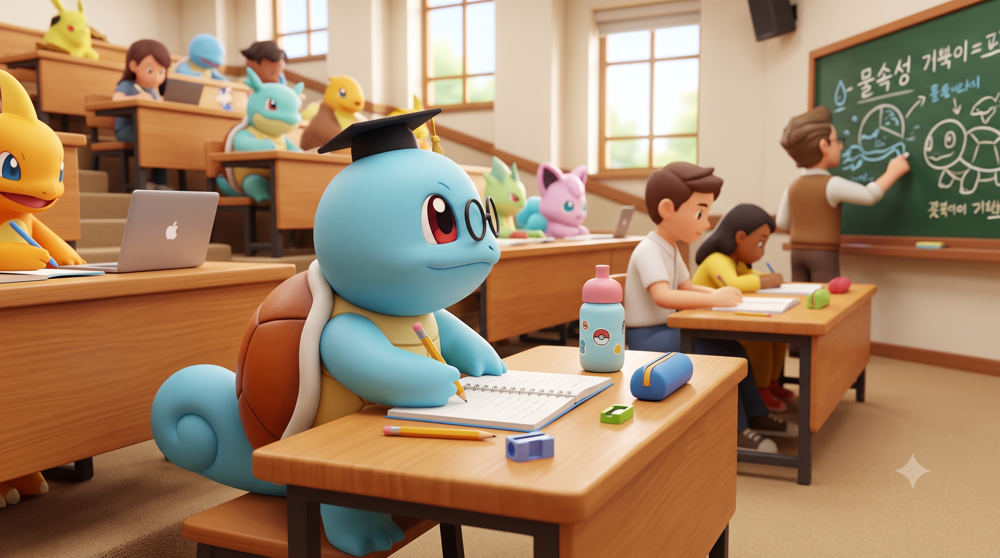

query_stats
연구 소개 관심 분야
데이터와 인공지능으로 문제를 탐구합니다
Researcher in Data & AI
데이터를 분석해 인사이트를 발견하고, 인공지능 기술의 다양한 활용 가능성을 연구합니다.

심리학과 인공지능에 관심이 있는 연구자입니다.
사람의 마음과 데이터, 인공지능이 만나는 지점을 탐구합니다.
심리학과 인공지능에 관심이 있는 연구자입니다.
Researcher in Data & AI
데이터를 분석해 인사이트를 발견하고, 인공지능 기술의 다양한 활용 가능성을 연구합니다.
데이터를 정리하고 분석해 의미 있는 패턴과 인사이트를 찾습니다.
인지 과정과 사람의 행동을 이해하고, 생성형 AI를 활용한 가능성을 탐구합니다.
데이터 분석과 인공지능을 활용한 연구 프로젝트입니다.
뉴스 데이터를 수집하고 분석해 주요 키워드와 시간에 따른 이슈 변화를 살펴보는 프로젝트입니다.
대규모 언어 모델을 활용해 질문을 이해하고 유용한 답변을 제공하는 챗봇 개발 프로젝트입니다.
소셜미디어 데이터를 분석해 사용자 반응과 주제별 감성의 흐름을 탐색하는 프로젝트입니다.
LLM을 이용하여 뉴스 기사 내용을 분석하는 프로젝트입니다.
프로젝트 링크는 관련 예시 저장소 검색으로 연결됩니다. 실제 프로젝트 링크로 교체해 주세요.
새로운 프로젝트와 협업 제안을 기다립니다.
새로운 프로젝트나 협업 기회에 대해 언제든 편하게 이야기 나눠보세요. 따뜻한 커피 한 잔과 함께하는 캐주얼 챗도 환영합니다.